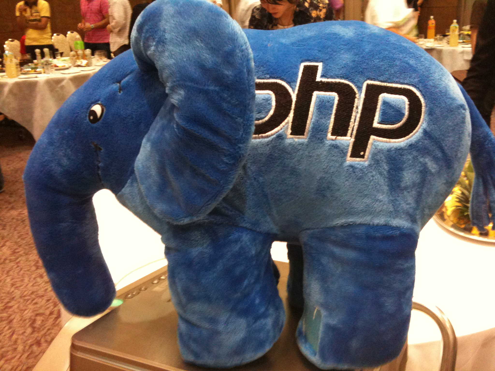
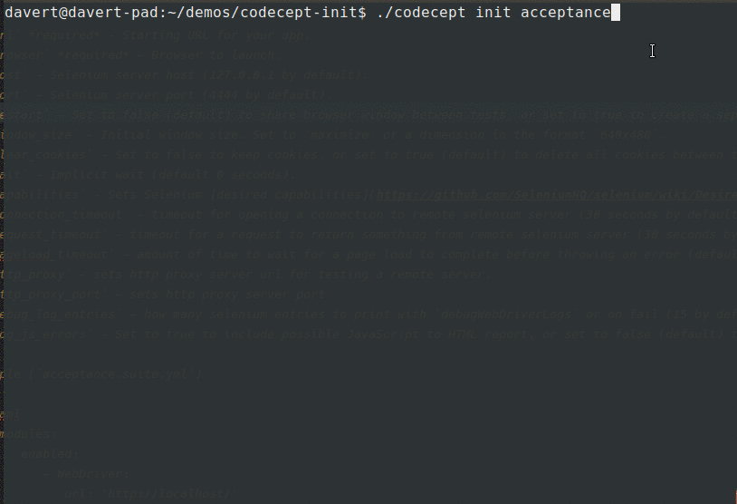
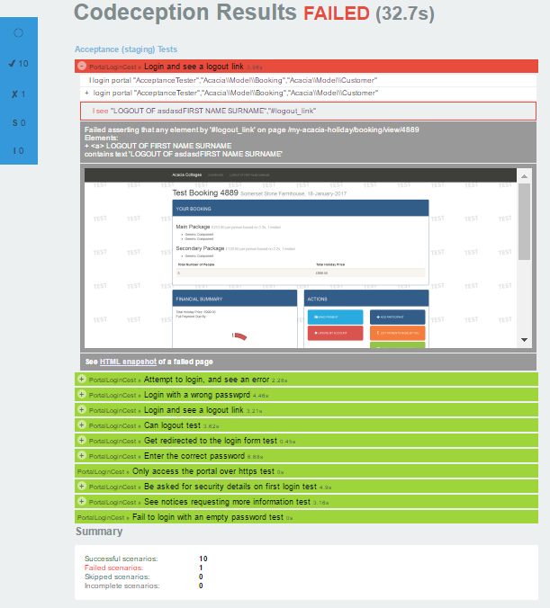

Selenium Testing in PHP with Codeception
TestCon Vilnus 2017
Michael Bodnarchuk
- Web developer from Kyiv, Ukraine
- Consultant and Trainer at SDCLabs
- Lead developer of Codeception testing framework
Let's talk about PHP
- Yeah, it's still there
- It's not that bad
- It can be used for automated testing
Modern PHP

Why PHP
- PHP is used by 81.7% of all the websites whose server-side programming language we know.
- PHP considered a simple language
- PHP developers!
- WordPress, Drupal, Magento, OSCommerce...
- Facebook, WikiPedia...
Features of PHP
- Object Oriented Language
- For server-side web development only
- Born to DIE
Legacy PHP
if (isset($_GET['code'])) {
if (strval($_SESSION['state']) !== strval($_GET['state'])) {
die('The session state did not match.');
}
$client->authenticate($_GET['code']);
$_SESSION['token'] = $client->getAccessToken();
header('Location: ' . $redirect);
}
Fixing a bug in legacy PHP may look like this
Dark Ages
- $ - prefixed variables
- C-inherited functions for strings and arrays
- Errors are not exceptions
- Backwards compatible since 1996
- Procedural programming
- HTML + PHP in one file
Hiring PHP devs in Finland in 3 steps:
— Jani Tarvainen (@velmu) October 17, 2017
1. Don't mention PHP in job ad
2. Entertain during trial period w/ Go, JS…
3. Hand over PHP projects
Modern PHP
namespace Acme\HelloBundle\Controller;
use Symfony\Bundle\FrameworkBundle\Controller\Controller;
class HelloController extends Controller
{
/*
* @Route("/{id}", requirements={"name" = "\w+"})
*/
public function indexAction($name)
{
return $this->render(
'Hello:index.html.twig', ['name' => $name]
);
}
} Fixing bugs in modern PHP like a boss

[motivational picture]
PHP Today
- Java-style OOP
- Namespaces
- Annotations
- Autoloading
- Coding standard PSR
- Package Manager - Composer
Selenium Webdriver
WebDriver
- No official Webdriver implementation
- But we have "facebook/php-webdriver"
facebook/php-webdriver
- Developed by Facebook
- Apache 2 license
- API is much similar to Java
- Selenium 2 and Selenium 3 compatible
Selenium WebDriver Code
$search = $wd->findElement(WebDriverBy::id('js-command-bar-field'));
$search->click();
// typing into field
$wd->getKeyboard()->sendKeys('php-webdriver');
// pressing "Enter"
$wd->getKeyboard()->pressKey(WebDriverKeys::ENTER);
$firstResult = $wd->findElement(WebDriverBy::cssSelector('ul#list li'));
$firstResult->click();
Testing Frameworks
- PHPUnit
- Behat
- Codeception
Codeception
- BDD-style testing framework
- High-level API
- PageObject/StepObject included
- Easy to read, write, debug
Install Codeception

// Custom method
$I->loginAsAdmin();
// Navigate to the Media Library
$I->amOnPage( '/wp-admin' );
$I->click('New Media');
$I->waitForText( 'Upload New Media' );
// Add new file
$I->attachFile( 'input[type="file"]', 'team.jpg' );
// Wait for upload
$I->waitForElement( '.edit-attachment', 20 );
// Assertion
$I->see( 'Edit Media' );
Let's remove PHP stuff
This code can be easily read by non-PHP developers
I loginAsAdmin
I amOnPage '/wp-admin'
I click 'New Media'
I waitForText 'Upload New Media'
I attachFile 'input[type="file"]', 'team.jpg'
I waitForElement '.edit-attachment', 20
I see 'Edit Media'
Codeception Tests
- Written from user's perspective: I->click, I->see
- Focused on test scenario, not on implementation
- Separate test from support code
Locators
- CSS
- XPath
- Button | Link Texts
- Field Names
- Field Labels
Page Objects in Codeception
// routes
public static $rootUrl = '/tasks';
// UI elements
public $viewButton = ['css' => 'a.view'];
// actions
public function createTask($task)
{
$I = $this->i;
$I->amOnPage(self::$addUrl);
$I->click('Add Task');
$I->fillField('To do', $task);
$I->click('Create');
}
Using PageObjects in Tests
public function viewTask(AcceptanceTester $I,
\Page\Task $taskPage)
{
// create initial data
$this->taskId = $taskPage->createTask('Finish the test');
$I->amOnPage($tasksPage->rootUrl); // move to page
$I->see('Displaying 1-1 of 1 result.','.summary');
$I->click($taskPage->viewButton); // using PageObject
$I->see('Finish the test', 'h2');
}
Step by Step Report
Test: view task
Scenario --
\Page\TaskPage: createTask
I am on page "/tasks"
I click 'Add Task'
I fill field 'To do', 'Finish the test'
I click 'Create'
I see 'Displaying 1-1 of 1 result.','.summary'
I click { css: 'a.view'}
I see 'Finish the test', 'h2'
Complex End 2 End Test
/** @after deleteWebSite */
public function editWebSite(
\AcceptanceTester $I,
\Page\WebSite $page,
\Page\WebSiteForm $editPage)
{
$this->websiteId = 'site'.sq(1);
$page->createWebSite(['id' => $this->websiteId]);
$editPage->open($this->websiteId);
$I->see('Update '.$page->websiteName, 'h1');
$editPage->update(['name' => 'EditedSite'.sq(2)]);
$I->amOnPage($page->rootUrl);
$I->expect('new website name is in grid')
$I->dontSee($page->websiteName, $page->grid);
$I->see('EditedSite'.sq(2),$ page->grid);
}
Test Output
Edit website (\WebsiteCest::editWebsite)
Scenario:
* I login
I am on page "/site/login/"
I fill field "E-mail","mrdummy@mail.com"
I fill field "Password","dummy123"
I check option "Remember me"
I click {"css":".rebilly-login-button"}
I see "Overview","h1"
* \Page\WebSite: createWebSite {"id": "site_559fa20cda337"}
I am on page "/websites/add"
I see "Add Website"
I fill field "Website Id","site_559fa20cda337"
I fill field "Website Name","web-test"
I fill field "Domain","http://www.pushplay.com"
I fill field "Customer Service Phone","123456789"
I fill field "Customer Service Email","websitetest@gmail1.com"
I fill field "Webhook Url","http://www.webtest.com/123abc"
I click "Save Website"
I wait 1
Reports
- Console reports (default)
- XML reports
- HTML reports
- CodeCoverage reports
HTML Report

BDD in Codeception
- Business specifications written by examples
- Example scenarios in plain English (like in Cucumber)
- Scenarios can be executed as tests
BDD Example
Feature: content
In order to manage content article in the web
As an owner
I need to unpublish content article
Background:
Given Joomla CMS is installed
Scenario: Create an Article
Given There is a add content link
When I create new content with "My_Article"
Then I should see "Article successfully saved."
BDD step implementation
/**
* @When I create new content with :title
*/
public function iCreateNewContent($title)
{
$I = $this->i;
$I->fillField(self::$title, $title);
$I->scrollTo(['css' => 'div.toggle-editor']);
$I->click(self::$toggleEditor);
}
Enhanced BDD
Solving Bug == Feature antipattern
Combine tests and features:
- Feature as happy test scenario
- Test for different behaviors
How to Wait For Elements
- wait(2) - wait for 2 seconds
- waitForElement, waitForText
- SmartWaits (based on Implicit Waits)
Other Notable Features
- Interactive Console
- Session Snapshots
- Multi-Session Testing
Test Data Management
- Via database connection
- Via REST API
- By accessing PHP app directly
Architecture
- Methods are defined in modules (ex: I->click())
- Modules can be combined (ex: WebDriver, Db, Redis)
- Custom modules can be created
Conclusion
- Codeception is full-stack testing framework in PHP
- Codeception can be used for end to end tests with WebDriver
- Codeception separates test from implementation
Questions?
I'm Michael Bodnarchuk 🐦 @davert
- Codeception: codeception.com
- CodeceptJS (for NodeJS) codecept.io